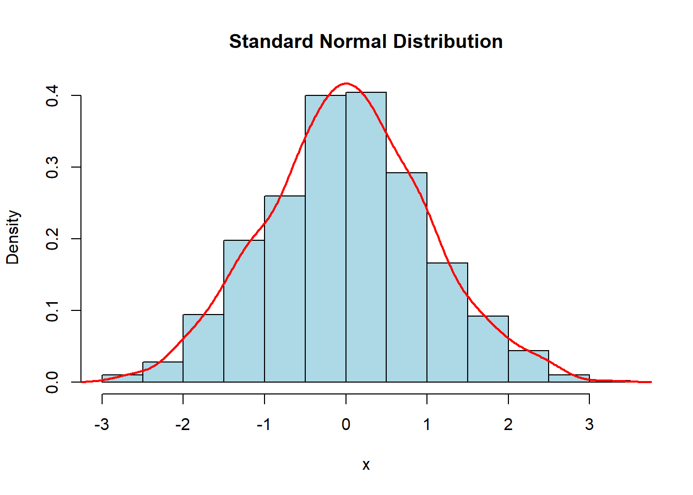
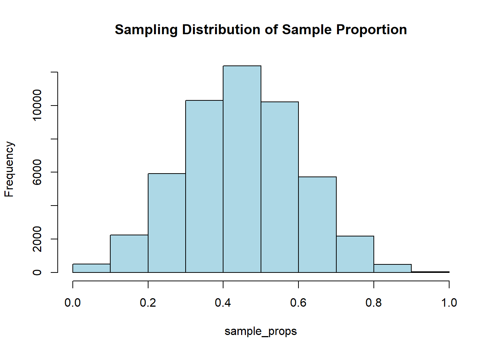
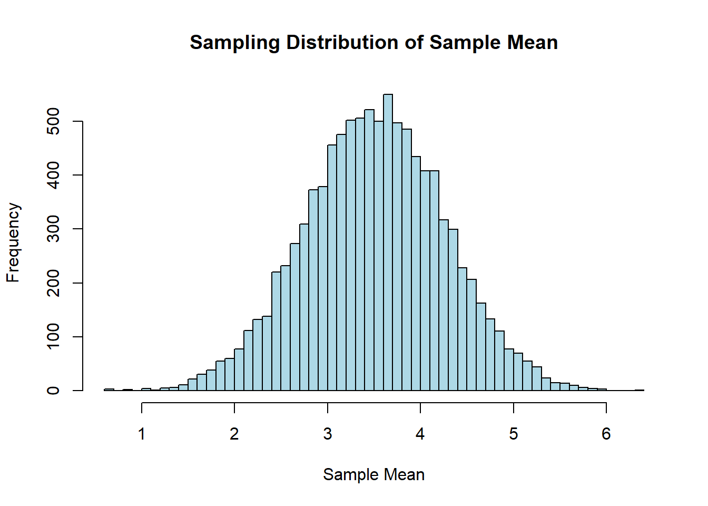
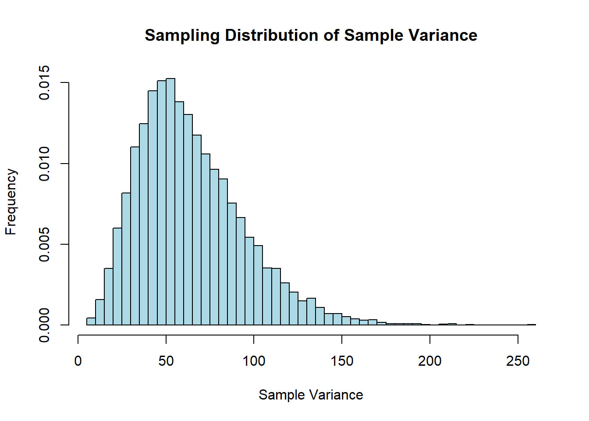

6.1.1 Normal distribution graph (Displaying only).
Code
set.seed(123) # Set the seed for reproducibilityx <-rnorm(1000, mean =0, sd =1) # Generate data for a standard normal distribution# Plot the data with density curvehist(x, prob =TRUE, col ="lightblue", main ="Standard Normal Distribution")lines(density(x), col ="red", lwd =2)

6.1.2 Find the probability (area) when z scores are given.
Code
# Find the area under the curve to the left of a certain value: P(z<1)pnorm(1, mean =0, sd =1)
[1] 0.8413447
Code
# Find the area under the curve to the right of a certain value: P(z>1)1-pnorm(1, mean =0, sd =1)
[1] 0.1586553
Code
# Find the area under the curve between two values: P(-1<z<1)diff(pnorm(c(-1, 1), mean =0, sd =1))
[1] 0.6826895
6.1.3 Find z scores when the area is given.
Code
# Find the value with a certain area under the curve to its left: critical value alpha <-0.05qnorm(1-alpha, mean =0, sd =1) # find the critical Z score.
[1] 1.644854
6.2 REAL application of normal distribution
6.2.1 Convert an individual x value to a z-score
Code
x <-80# the individual valuemu <-75# the mean of the distribution sigma <-10# the standard deviation of the distribution # Calculate z-scores for the individual value using scale()z_scores <-scale(x, center = mu, scale = sigma)cat("Z-score:", z_scores, "\n") # print the z-score
Z-score: 0.5
Code
z <- (x - mu) / sigma # find the z-score by using the formula cat("Z =", z, "\n") # print the z-score
Z = 0.5
6.2.2 Find the probability when x value is given (page 269 Pulse Rates Question)
Code
x1 <-60x2 <-80mu <-69.6sigma <-11.3# Find the probability that X is less than 60: P(X<60)pnorm(x1, mean = mu, sd = sigma)
[1] 0.1977856
Code
# Find the probability that X is great than 80: P(X>80)1-pnorm(x2, mean = mu, sd = sigma)
[1] 0.1786939
Code
# Find the probability between two values: P(60<X<80)diff(pnorm(c(x1, x2), mean = mu, sd = sigma))
[1] 0.6235205
6.2.3 Convert a z-score back to x value
Code
z <-1.96# the z-scoremu <-100# the mean of the distributionsigma <-15# the standard deviation of the distributionx <- z * sigma + mu # convert the z score to individual x value using formulacat("X =", x, "\n") # print the individual x value
X = 129.4
6.3 SAMPLING distributions and estimators (Displaying only/Optional)
6.3.1 general behavior of sampling distribution of the sample proportion
Code
# Set the seed for reproducibilityset.seed (123)# Generate datan <-10# sample sizep <-0.5# population proportionsamples <-replicate(50000, rbinom(1, size = n, prob = p))# Calculate sample proportionssample_props <- samples / n# Plot the histogramhist(sample_props, breaks =seq( 0, 1, by =0.1 ), col ="lightblue", main ="Sampling Distribution of Sample Proportion")

6.3.2 general behavior of sampling distribution of the sample mean
Code
#input the parameter valuesmu <-3.5sigma <-1.7n <-5# Simulate sampling distributionsample_means <-replicate(10000, mean(rnorm(n, mu, sigma)))# Create a histogram of the sampling distribution of the sample meanhist(sample_means, breaks ="FD", main ="Sampling Distribution of Sample Mean", xlab ="Sample Mean", ylab ="Frequency", col ="lightblue", border ="black")

6.3.3 general behavior of sampling distribution of the sample variance
Code
mu <-4# True population meansigma <-8# Population standard deviationsample_size <-10# Sample sizenum_samples <-10000# Number of samples# Function to calculate sample variancesample_variance <-function(sample) { n <-length(sample) mean_sample <-mean(sample) sum_squared_deviations <-sum((sample - mean_sample)^2)return(sum_squared_deviations / (n -1))}# Simulate sampling distributionsample_variances <-replicate(num_samples, sample_variance(rnorm(sample_size, mu, sigma)))# Create a histogram of the sampling distribution of sample variancehist(sample_variances, breaks ="FD", freq =FALSE, main ="Sampling Distribution of Sample Variance",xlab ="Sample Variance", ylab ="Frequency", col ="lightblue", border ="black")

6.4 THE central limit theorem
6.4.1 Find the probability when individual value is used (Page 292 Ejection Seat Question)
Code
mu <-171# population meansigma <-46# population standard deviationn <-25# sample sizex_lower <-140x_upper <-211# Find the probability between two X valuesprobability_range <-diff(pnorm(c(x_lower, x_upper), mean = mu, sd = sigma))probability_range
[1] 0.5575477
6.4.2 Find the probability when sample mean is used (Page 292 Ejection Seat Question)
Code
# Find the probability between two mean values $x/bar$ (CLT)standard_error <- sigma /sqrt(n) # Calculate the standard error of the sample meanprobability_range <-diff(pnorm(c(x_lower, x_upper), mean = mu, sd = standard_error))# Find the probability probability_range